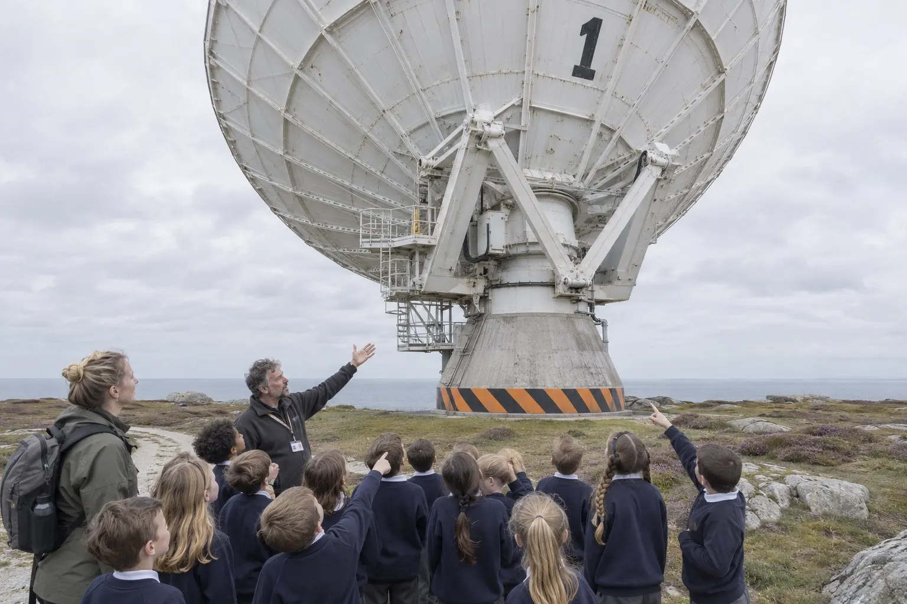
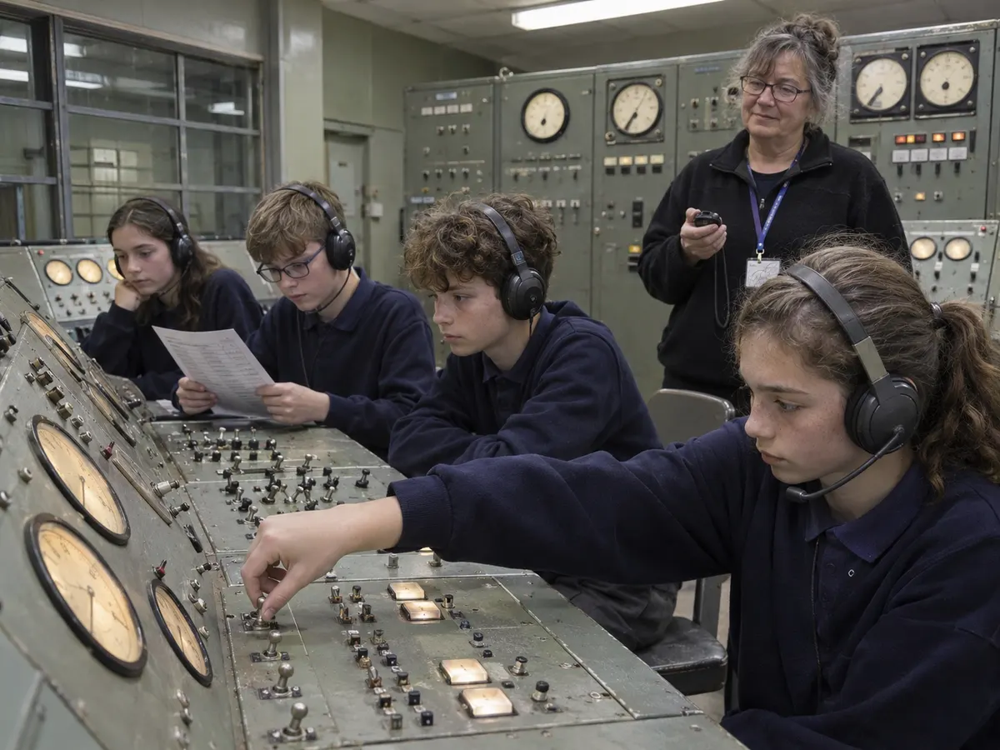

School trips and group visits
A day out that is also the curriculum. Pupils sit in the dome, steer a radio telescope and fly a tracking pass from the 1966 control room.
Sessions are led by our learning team and DBS-checked volunteers, written against the national curriculum and adapted for SEND groups on request.

From the Moon to the Milky Way
Every visit includes a planetarium show. Choose workshops to suit the topic; we send pre-visit notes and a risk assessment when you book.
- Ages 5 to 7KS1Day and night
Why the Sun seems to move, the shapes of the Moon, and a rocket that really flies.
- Little Astronauts show
- Rocket Lab
- Ages 7 to 11KS2Earth and space
The Year 5 unit end to end: the planets to scale, day length and the Moon’s orbit.
- Tonight’s Sky show
- Mission Sim
- Rocket Lab
- Ages 11 to 14KS3Waves and signals
The electromagnetic spectrum, why a dish is a dish, and what a radio telescope hears.
- Listening to Hydrogen
- Mission Sim
- Ages 14 to 18KS4+Radio astronomy lab
Students take hydrogen-line data with Dish One and plot the rotation of the galaxy themselves.
- Dish data lab
- Giant Planets show
Build the day
Pick the year group, the class size and the sessions. The timetable and the cost update as you go; send it to us and we will hold a date.

Mission Sim
Sixteen pupils, fourteen consoles, one satellite that rises at 11:42 and sets eleven minutes later.
Teams take the jobs the night shift did: the clock, the pointing, the receivers, the log. They get a pass prediction off the teleprinter, slew the dish and keep it on target until loss of signal. Then we do it again, faster.
- 01
BriefRoles, headsets and the intercom.
- 02
AcquirePoint the dish where the satellite will be, not where it is.
- 03
Track and logHold the signal and write down everything.
Not a school?
Clubs, societies, care homes and companies get the same people and the same instruments, booked around you.
An evening session covering every requirement, with certificates signed in the control room.
£9 a head, a guided dish walk and a reserved block in the dome. Coach parking at the gate.
Private shows and observing for clubs and teams, with the Feed Cabin open late.